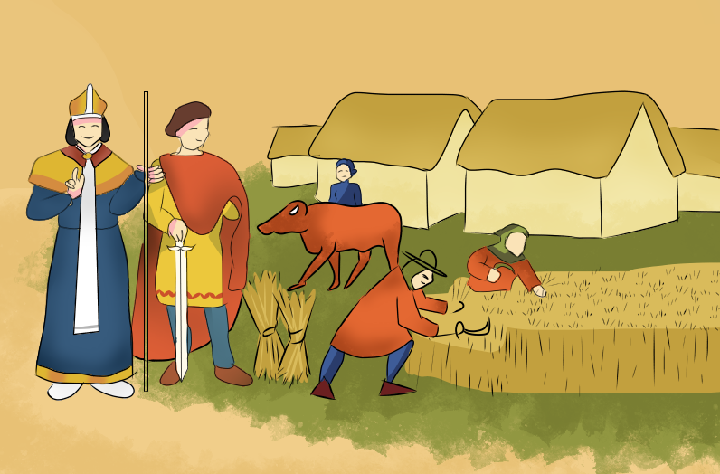

"la vida medieval de los campesinos y los señores feudales":
Eran pobres; vestían pieles de animales; pegan altos impuestos al señor feudal;
tenían solidaridad para atravesar la miseria; sus viviendas hechas de paja con paredes/
revestidas con barro, techo de paja y piso de tierra; recurría en el bosque en busca de piñas
para aprender el fuego y semillas para comer.

© Florencia Francés Perez, Mateo Gamarra <3.